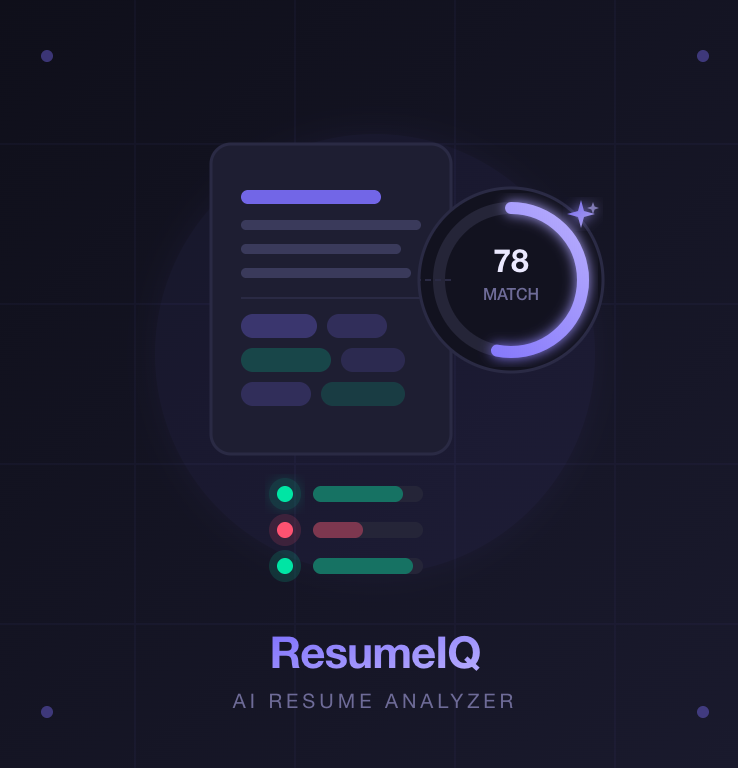
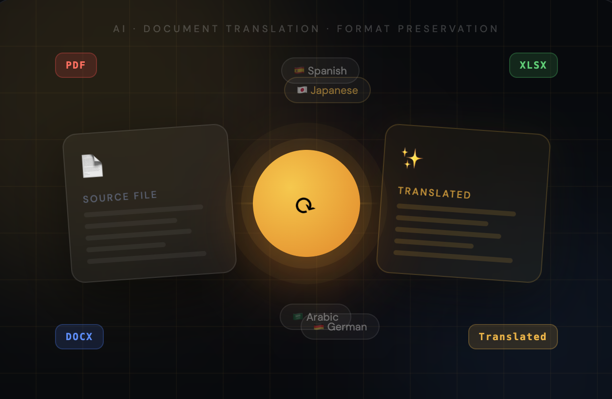

Predictive analytics project analyzing employee attrition patterns using Python.
Implemented Logistic Regression and Decision Tree models achieving 80%+ accuracy. Performed comprehensive EDA,
outlier detection, and data visualization on 1,470 employee records to identify key turnover factors.
Built a Python-based OCR tool that extracts text from images using Tesseract OCR and Pillow. The system processes multiple image formats, analyzes image metadata, and exports extracted text into JSON, TXT, or CSV formats for further data processing.

An AI-powered full-stack web application that analyzes resumes against job descriptions — delivering instant match scores, skill gap analysis, and personalized improvement suggestions using LLaMA 3.3, FastAPI, and React.

A full-stack web app that translates PDF, DOCX, and XLSX files into 20+ languages while preserving the original format. Built with React + Vite on the frontend, FastAPI on the backend, and powered by Google Gemini 2.5 Flash. Features drag-and-drop upload, live progress tracking, and auto-download of the translated file.
A Flask-based tool that extracts frames from uploaded videos using OpenCV, sends them to a vision model for scene description, and applies cosine similarity to remove redundant entries — outputting a structured, timestamped transcript file.